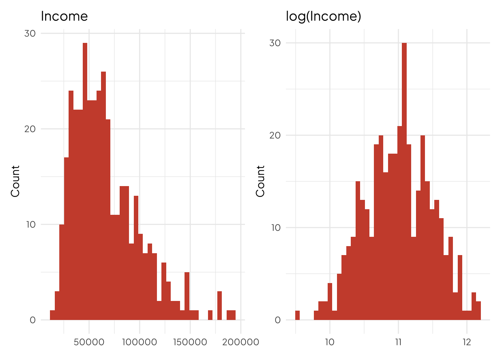
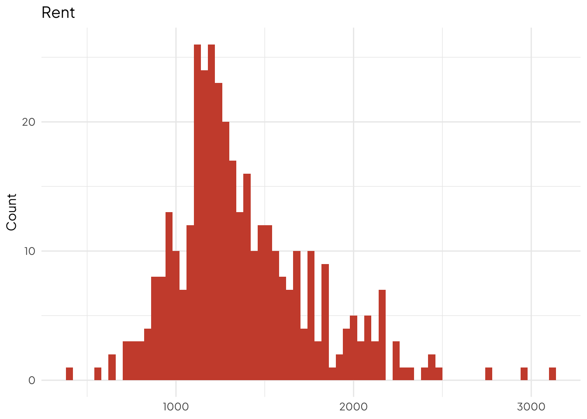
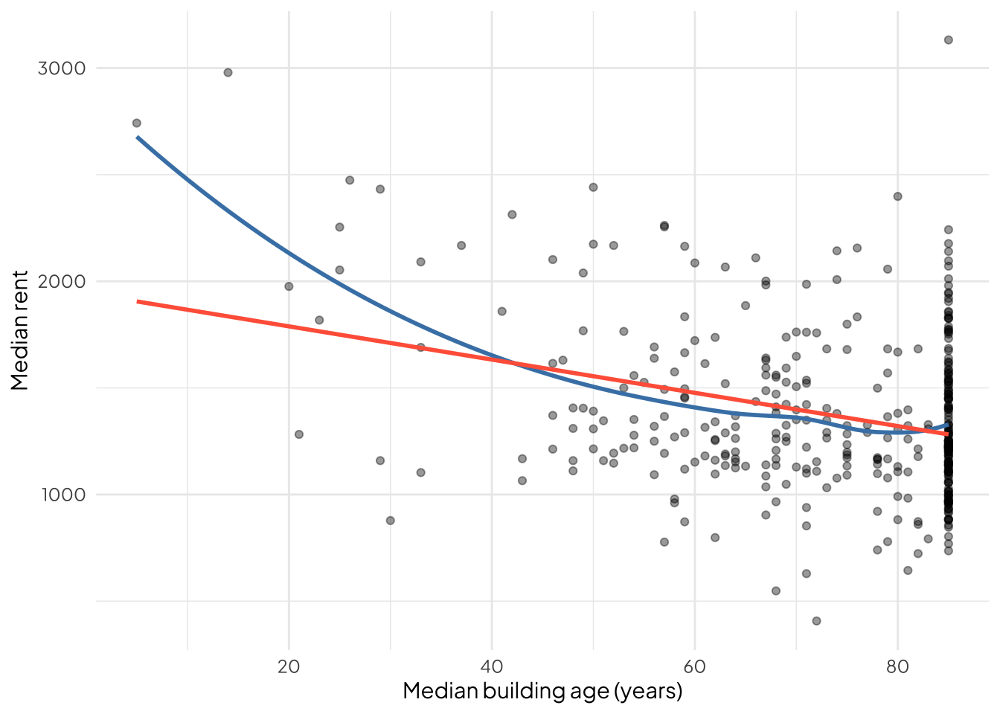
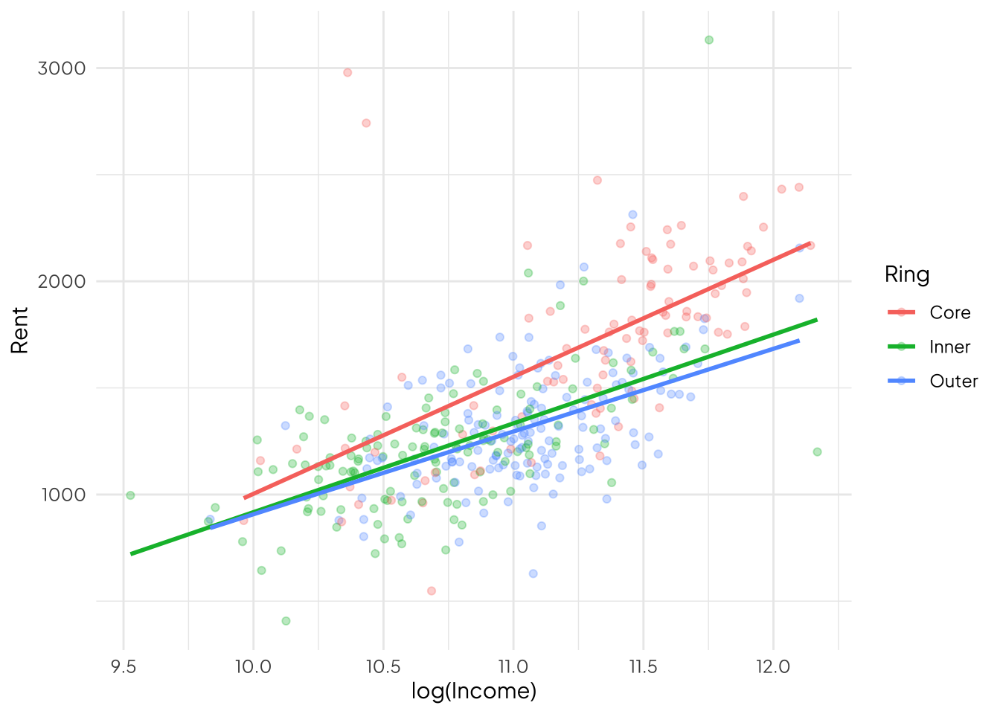
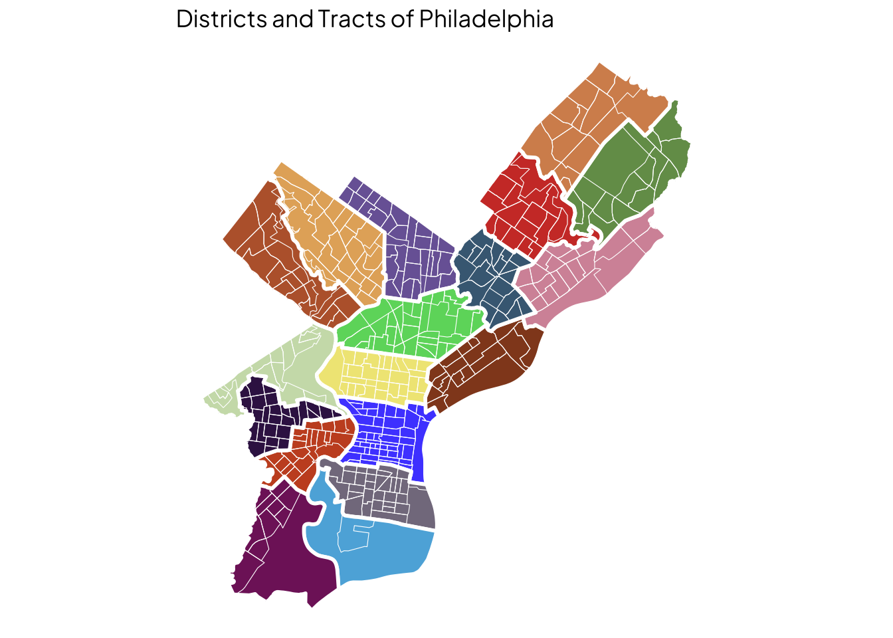
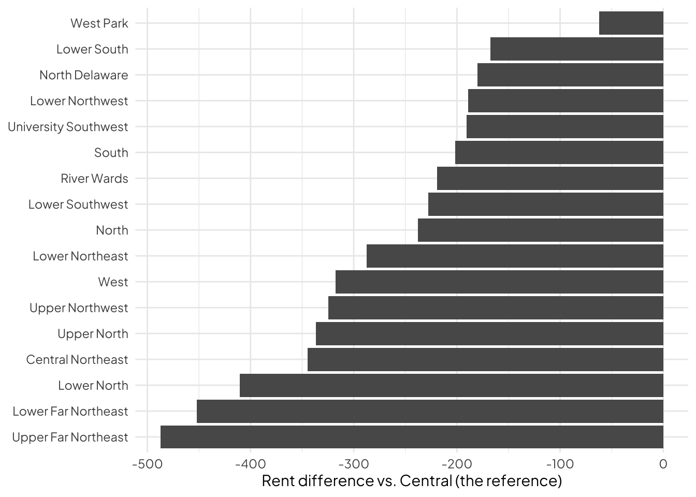
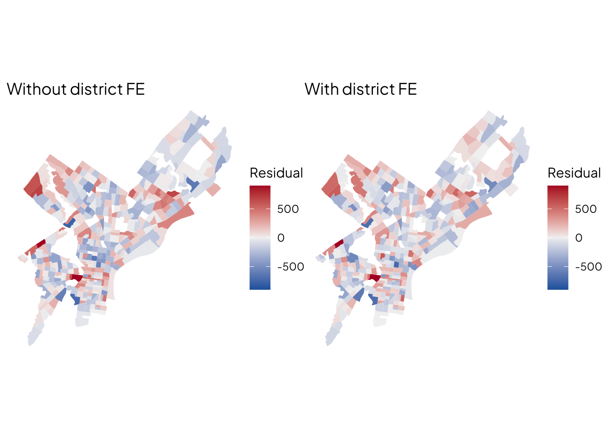
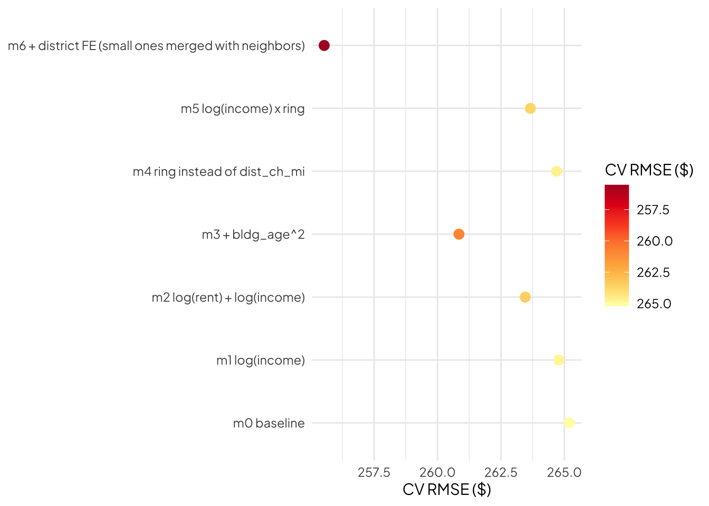

library(tidyverse)
library(tidycensus)
library(sf)
library(patchwork)
options(tigris_use_cache = TRUE)
library(showtext)
font_add_google("Plus Jakarta Sans", "jakarta")
showtext_auto()
census_api_key(Sys.getenv('CENSUS_API_KEY'))
tracts_raw <- get_acs(
geography = 'tract', state = 'PA', county = 'Philadelphia',
variables = c(
rent = 'B25064_001',
income = 'B19013_001',
pop = 'B01003_001',
yr_built = 'B25035_001',
hh_total = 'B25003_001',
hh_renter = 'B25003_003'),
year = 2023, survey = 'acs5', output = 'wide', geometry = TRUE
)|>
st_transform(2272)Week 6: Feature Engineering
Working with different kinds of models.
Feature Engineering
A linear model can only draw straight lines through whatever you give it. Feature engineering is deciding what you give it.
| Happens to \(\hat{y}\) (prediction) | Happens to \(\hat{\beta}\) (reading coefficients) | |
|---|---|---|
| Logs | Better fit on skewed data | Read in percentages, not units |
| Squared terms | Line can bend | No single coefficient means anything alone |
| Categories | Captures jumps and non-smooth patterns | Every coefficient is a comparison to a reference group |
| Interactions | Slopes can differ by group | Effect depends on which group you’re in |
| Fixed effects | Absorbs everything about a place you didn’t measure | Tells you where, never why |
We judge these by \(\text{CV RMSE}\), not by \(p\)-values.
Setup: the same tracts as Week 5
Build the predictors once, then drop missing rows once
city_hall <- st_sfc(st_point(c(-75.1636, 39.9526)), crs=4326) |>
st_transform(2272)
tracts <- tracts_raw |>
mutate(
rent = rentE,
rent_moe = rentM,
income = incomeE,
bldg_age = 2023 - yr_builtE,
pct_renter = 100 * hh_renterE / hh_totalE,
dist_ch_mi = as.numeric(st_distance(geometry, city_hall)) / 5280
) |>
select(GEOID, rent, rent_moe, income, bldg_age, pct_renter, dist_ch_mi) |>
filter(!is.na(rent), !is.na(income), !is.na(bldg_age), !is.na(pct_renter))
nrow(tracts)[1] 377Every model today uses these same rows. If one model quietly drops tracts, its \(\text{RMSE}\) isn’t comparable.
A \(\text{CV}\) helper with fixed folds
Same idea as cv_rmse() in your template. Same folds for every model, so differences come from the features, not luck.
set.seed(5080)
folds <- sample(rep(1:10, length.out = nrow(tracts)))
# Function that calculates cv rmse through k-fold validation:
cv_rmse <- function(f, data, log_outcome = FALSE) {
preds <- numeric(nrow(data))
for (k in 1:10) {
m <- lm(f, data[folds != k, ])
p <- predict(m, newdata = data[folds==k, ])
if (log_outcome) p <- exp(p)
preds[folds == k] <- p
}
sqrt(mean((data$rent - preds)^2))
}Baseline, and the model log (record)
f0 <- rent ~ income + pct_renter + bldg_age + dist_ch_mi
m0 <- lm(f0, data = tracts)
model_log <- tibble(model = 'm0', added = 'baseline',
cv_rmse = cv_rmse(f0, tracts))
model_log# A tibble: 1 × 3
model added cv_rmse
<chr> <chr> <dbl>
1 m0 baseline 265.In this model, we can predict the rent within about $265.
Every section ends the same way: fit it, cross-validate it on the same folds, add a row.
Part 1: \(\text{log}\) transformations
Why \(\text{log}\)? Skew.

Long right tail: a few very rich tracts pull the line around. A log pulls the tail in, so equal percentage differences become equal differences.
\(\text{log}\) a predictor
f_logx <- rent ~ log(income) + pct_renter + bldg_age + dist_ch_mi
m_logx <- lm(f_logx, data=tracts)
b <- coef(m_logx)['log(income)']
blog(income)
502.1787 b / 100 # rent change for a 1% increase in income log(income)
5.021787 b * log(1.10) # rent change for a 10% increase in income (exact)log(income)
47.86274 Reading it: a 1% increase in income goes with about \(\beta\)/100 dollars more rent, holding the other variables constant.
model_log <- model_log |>
add_row(model = 'm1', added='log(income)', cv_rmse=cv_rmse(f_logx, tracts))
model_log# A tibble: 2 × 3
model added cv_rmse
<chr> <chr> <dbl>
1 m0 baseline 265.
2 m1 log(income) 265.Didn’t really do much…
The zero problem
log(0)[1] -Inflog1p(0)[1] 0log1p(c(0, 1, 10, 100))[1] 0.0000000 0.6931472 2.3978953 4.6151205Your counts from the open data portal (crimes, trees, 311 calls) will have zeroes. log(0) is -Inf and lm() will fail or silently misbehave.
Use log1p(x) for anything that can be zero. The percentage reading becomes approximate for small values, which is fine.
\(\text{log}\) the outcome
Rent is skewed too:

Based on this, we can log \(y\) instead of (or as well as) \(x\).
f_logy <- log(rent) ~ log(income) + pct_renter + bldg_age + dist_ch_mi
m_logy <- lm(f_logy, data=tracts)
coef(m_logy) (Intercept) log(income) pct_renter bldg_age dist_ch_mi
3.5205043462 0.3633422828 0.0005273753 -0.0035283414 -0.0200274106 Interpretation:
pct_renter: a 1-unit increase in \(x\) goes with about a \(100 * \beta\) % change in rent
log_income: \(\text{log-log}\), so a 1% increase in income goes with about a \(\beta\)% change in rent (an elasticity)
The four combinations
| Model | Formula | A coefficient \(\beta\) means… |
|---|---|---|
| level-level | y ~ x |
+1 unit of \(x\) is + \(\beta\) units of \(y\) |
| level-\(\text{log}\) | y ~ log(x) |
+1% of \(x\) is + \(\beta/100\) units of \(y\) |
| \(\text{log}\)-level | log(y) ~ x |
+1 unit of \(x\) is \(\approx 100 * \beta\) % change in \(y\) |
| \(\text{log-log}\) | log(y) ~ log(x) |
+1% of \(x\) is \(\approx\beta\) % change in \(y\) |
The \(\approx\) gets worse as \(\beta\) gets large.
The trap: your model stops making sense!
sqrt(mean(residuals(m_logy)^2)) # looks amazing! [1] 0.1885153sqrt(mean(residuals(m0)^2))[1] 259.5507The first number is in \(\text{log}\)-dollars. The second is in dollars. Comparing them is meaningless.
Fix: predict, then exp() back to dollars before computing \(\text{RMSE}\).
model_log <- model_log |>
add_row(model='m2', added='log(rent) + log(income)',
cv_rmse = cv_rmse(f_logy, tracts, log_outcome=TRUE))
model_log# A tibble: 3 × 3
model added cv_rmse
<chr> <chr> <dbl>
1 m0 baseline 265.
2 m1 log(income) 265.
3 m2 log(rent) + log(income) 263.Part 2: Squared terms
When the scatterplot bends

If the flexible curve and the straight line disagree, a straight line is leaving information on the table.
Look at the pile-up on the right. The census codes everything built before 1940 as ‘1939 or earlier’, so the building age tops out. That’s the data, not a pattern. Check your own variables for walls like this.
Add a squared term
f_sq <- rent ~ log(income) + pct_renter + bldg_age + I(bldg_age^2) + dist_ch_mi
m_sq <- lm(f_sq, data=tracts)
coef(m_sq)[c('bldg_age', 'I(bldg_age^2)')] bldg_age I(bldg_age^2)
-28.0044512 0.1823244 I() means ‘do the math’. Without it, R reads ^ as formula syntax and will ignore what you want.
Reading it: you can’t read either coefficient alone. The effect of age depends on the age.
Linear + squared - -> rises, then levels off or falls
Linear - squared + -> falls, then levels off or rises
Where does it turn?
b1 <- coef(m_sq)['bldg_age']
b2 <- coef(m_sq)['I(bldg_age^2)']
-b1 / (2 * b2) # The turning pointbldg_age
76.79841 range(tracts$bldg_age)[1] 5 85It’s within the range!
If the turning point is outside your data, the curve is just bending, not turning. Don’t tell a story about a turn you never observed.
model_log <- model_log |>
add_row(model='m3', added = '+ bldg_age^2', cv_rmse=cv_rmse(f_sq, tracts))
model_log# A tibble: 4 × 3
model added cv_rmse
<chr> <chr> <dbl>
1 m0 baseline 265.
2 m1 log(income) 265.
3 m2 log(rent) + log(income) 263.
4 m3 + bldg_age^2 261.Part 3: Categorical variables
Two reasons to use categories
- The variable already is one: zoning class, planning district, housing type
- A number behaves like groups: the relationship jumps instead of sloping smoothly
Make them with case_when() or cut(), then make sure R treats them as a factor.
case_when()
tracts <- tracts |>
mutate(
ring = case_when(
dist_ch_mi < 2 ~ 'Core',
dist_ch_mi < 5 ~ 'Inner',
TRUE ~ 'Outer'
),
ring = factor(ring, levels = c('Core', 'Inner', 'Outer'))
)
tracts |> st_drop_geometry() |> count(ring) ring n
1 Core 94
2 Inner 133
3 Outer 150cut() for evenly spaced bins
tracts <- tracts |>
mutate(renter_band = cut(pct_renter,
breaks=c(0,33,66,100),
labels=c('Mostly Owners', 'Mixed', 'Mostly Renters'),
include.lowest=TRUE))
tracts |> st_drop_geometry() |> count(renter_band) renter_band n
1 Mostly Owners 88
2 Mixed 210
3 Mostly Renters 79What R does behind the scenes
model.matrix(~ ring, data=st_drop_geometry(tracts)) |> head(8) (Intercept) ringInner ringOuter
1 1 0 0
2 1 0 0
3 1 0 0
4 1 0 0
5 1 1 0
6 1 1 0
7 1 1 0
8 1 1 0A factor with \(k\) categories becomes \(k-1\) dummy variables (0/1) columns. The one left out, Core, is the reference level. It’s absorbed into the intercept.
You never make the dummies yourself. You also never include all \(k\). That’s what the reference level prevents.
Reading the coefficients
f_cat <- rent ~ log(income) + pct_renter + bldg_age + I(bldg_age^2) + ring
m_cat <- lm(f_cat, data=tracts)
coef(m_cat)[c('ringInner', 'ringOuter')]ringInner ringOuter
-122.2774 -164.1935 Every category coefficient is a comparison to the reference. `
ringOuter is how much higher or lower predicted rent in outer tracts compared to core tracts, holding all other variables constant.
Change the reference
tracts_r <- tracts |> mutate(ring=relevel(ring, ref='Outer'))
coef(lm(f_cat, data=tracts_r))[c('ringCore', 'ringInner')] ringCore ringInner
164.19351 41.91608 Predictions don’t change at all. Only the comparison changes. Pick the reference that makes the sentence you want to write the easiest. Often that’s the largest group or a natural baseline.
The trade: you threw information away
We replaced dist_ch_mi (a number) with ring (three groups). Two tracts at 2.1 and 4.9 miles are now identical, according to the model.
model_log <- model_log |>
add_row(model = 'm4', added='ring instead of dist_ch_mi',
cv_rmse = cv_rmse(f_cat, tracts))
model_log# A tibble: 5 × 3
model added cv_rmse
<chr> <chr> <dbl>
1 m0 baseline 265.
2 m1 log(income) 265.
3 m2 log(rent) + log(income) 263.
4 m3 + bldg_age^2 261.
5 m4 ring instead of dist_ch_mi 265.Did it help or hurt? Binning helps when the relationship is really jumpy. It hurts when it’s smooth. The model log tells us which.
Part 4: Interactions
When the slope depends on the group
ggplot(tracts, aes(log(income), rent, color=ring)) +
geom_point(alpha=0.3) + geom_smooth(method='lm', se=FALSE) +
theme_minimal(base_family='jakarta') + labs(color='Ring', x='log(Income)', y='Rent')
Notice how the slopes of these lines are different. This means that the relationship between income and rent is different depending on which category you’re in.
If the lines aren’t parallel, income “matters” differently in different rings. A plain categorical can only shift the line up or down. An interaction lets it tilt.
Fit and read it
f_int <- rent ~ log(income) * ring + pct_renter + bldg_age + I(bldg_age^2)
m_int <- lm(f_int, data = tracts)
coef(m_int)[grep('income', names(coef(m_int)))] log(income) log(income):ringInner log(income):ringOuter
653.6974 -219.1028 -244.4214 a * b gives you a, b and a:b.
Slope of
log(income)inCore(the reference) =log(income)Slope in
Outer = log(income) + log(income):ringOuter
model_log <- model_log |>
add_row(model = 'm5', added='log(income) x ring',
cv_rmse = cv_rmse(f_int, tracts))
model_log# A tibble: 6 × 3
model added cv_rmse
<chr> <chr> <dbl>
1 m0 baseline 265.
2 m1 log(income) 265.
3 m2 log(rent) + log(income) 263.
4 m3 + bldg_age^2 261.
5 m4 ring instead of dist_ch_mi 265.
6 m5 log(income) x ring 264.Use interactions when you have a reason, not by crossing everything with everything. Each one adds \(k-1\) more coefficients to estimate from the same 380-ish tracts.
Part 5: Fixed effects
A categorical variable for place
A fixed effect is a categorical variable for a group of observations, usually a place: one dummy per neighborhood, district, or county.
It soaks up everything constant about that place that you didn’t measure: reputation, school catchments, transit, history, the stuff you’d never find in the table.
We’ll use Philadelphia’s 18 planning districts:
districts <- st_read(
"https://services.arcgis.com/fLeGjb7u4uXqeF9q/arcgis/rest/services/Planning_Districts/FeatureServer/0/query?outFields=*&where=1%3D1&f=geojson",
quiet=TRUE
) |> st_transform(2272)
names(districts)[1] "objectid" "dist_name" "abbrev" "Shape__Area"
[5] "Shape__Length" "geometry" 
Assign each tract to a district
tracts <- tracts |>
st_join(districts |> select(district=dist_name), largest=TRUE) |>
mutate(district=factor(district))
tracts |> st_drop_geometry() |> count(district, sort=TRUE) district n
1 Central 47
2 Upper North 31
3 North 30
4 South 30
5 Lower North 27
6 Upper Northwest 26
7 West 26
8 University Southwest 21
9 North Delaware 19
10 Lower Northeast 18
11 Lower Northwest 17
12 River Wards 17
13 Central Northeast 16
14 Lower Far Northeast 15
15 Upper Far Northeast 13
16 West Park 13
17 Lower Southwest 10
18 Lower South 1largest = TRUE means that if a tract straddles a boundary, it goes to whatever has most of its area. One tract, one district.
Numbers that are really labels
If districts came coded 1-18, this would run without complaint:
tracts <- tracts |> mutate(district_num = as.numeric(district))
coef(lm(rent ~ district_num, data=tracts)) (Intercept) district_num
1575.68541 -20.96668 Add the fixed effect
f_fe <- rent ~ log(income) + pct_renter + bldg_age + I(bldg_age^2) + district
m_fe <- lm(f_fe, data=tracts)
coef(m_sq)['log(income)'] # beforelog(income)
519.7439 coef(m_fe)['log(income)'] # afterlog(income)
427.3889 Why did the income coefficient change? Before, it compared tracts across the whole city. Now it compares tracts within the same district. Some of what looked liked ‘income’ was really ‘being in a district where everything is more expensive’.
That’s a \(\hat{\beta}\) story. For \(\hat{y}\), the question is just: did it predict better?
Each district’s intercept
fe_coefs <- tibble(term=names(coef(m_fe)), est=coef(m_fe)) |>
filter(str_starts(term, 'district')) |>
mutate(term=str_remove(term, 'district')) ggplot(fe_coefs, aes(est, reorder(term,est))) +
geom_col() +
labs(x=paste('Rent difference vs.', levels(tracts$district)[1], '(the reference)'),
y=NULL) +
theme_minimal(base_family='jakarta')
This is the “price of being there”, after income, tenure, and age. It tells you where, not why.
Did it absorb the clusters?
tracts <- tracts |>
mutate(resid_before = residuals(m_sq),
resid_fe = residuals(m_fe))map_resid <- function(var, title) {
ggplot(tracts) +
geom_sf(aes(fill=.data[[var]]), color=NA) +
scale_fill_gradient2(low='#2166ac', mid='grey95', high='#b2182b', midpoint=0, limits = c(-900, 900), oob=scales::squish) +
labs(title=title, fill='Residual') + theme_void(base_family='jakarta')
}
map_resid('resid_before', 'Without district FE') + map_resid('resid_fe', 'With district FE')
Into the model log
The code below merges some small tracts together (we did this because we have very small observations in some)
small <- tracts %>% st_drop_geometry() %>%
count(district) %>% filter(n < 10 | is.na(district)) %>% pull(district)
is_small <- tracts$district %in% small | is.na(tracts$district)
nearest <- st_nearest_feature(tracts[is_small, ], tracts[!is_small, ])
tracts <- tracts %>%
mutate(district_cv = as.character(district))
tracts$district_cv[is_small] <- as.character(tracts$district[!is_small][nearest])
tracts <- tracts %>% mutate(district_cv = factor(district_cv))
tracts %>% st_drop_geometry() %>% count(district_cv) %>% arrange(n) %>% head(5) district_cv n
1 Lower Southwest 10
2 Upper Far Northeast 13
3 West Park 13
4 Lower Far Northeast 15
5 Central Northeast 16f_fe_cv <- rent ~ log(income) + pct_renter + bldg_age + I(bldg_age^2) + district_cv
model_log <- model_log |>
add_row(model='m6', added='+ district FE (small ones merged with neighbors)', cv_rmse = cv_rmse(f_fe_cv, tracts))
model_log# A tibble: 7 × 3
model added cv_rmse
<chr> <chr> <dbl>
1 m0 baseline 265.
2 m1 log(income) 265.
3 m2 log(rent) + log(income) 263.
4 m3 + bldg_age^2 261.
5 m4 ring instead of dist_ch_mi 265.
6 m5 log(income) x ring 264.
7 m6 + district FE (small ones merged with neighbors) 256.Check group sizes first, every time
tracts |> st_drop_geometry() |> count(district) |> arrange(n) |> head(5) district n
1 Lower South 1
2 Lower Southwest 10
3 Upper Far Northeast 13
4 West Park 13
5 Lower Far Northeast 15Rule of thumb: at least ~10 observations per group for 10-fold CV, more is safer.
If a group is too small:
Merge it with a neighbor that makes sense geographically or substantively (best)
Lump small groups into “other” with
fct_lump_min(district, min=10)(quick, but “Other” may be a nonsense group of cities scattered across the cityUse a coarser geography
6. Putting it all together
What the log says
ggplot(model_log, aes(cv_rmse, fct_inorder(paste(model, added)))) +
geom_point(size = 3, aes(color = cv_rmse)) +
labs(x = 'CV RMSE ($)', y = NULL, color = 'CV RMSE ($)') +
scale_color_distiller(palette = 'YlOrRd', direction = -1, guide = guide_colorbar(reverse = TRUE)) +
theme_minimal(base_family = 'jakarta')
Some moves help, some don’t, some hurt. That’s the finding. You wouldn’t know without the same folds and the same rows.